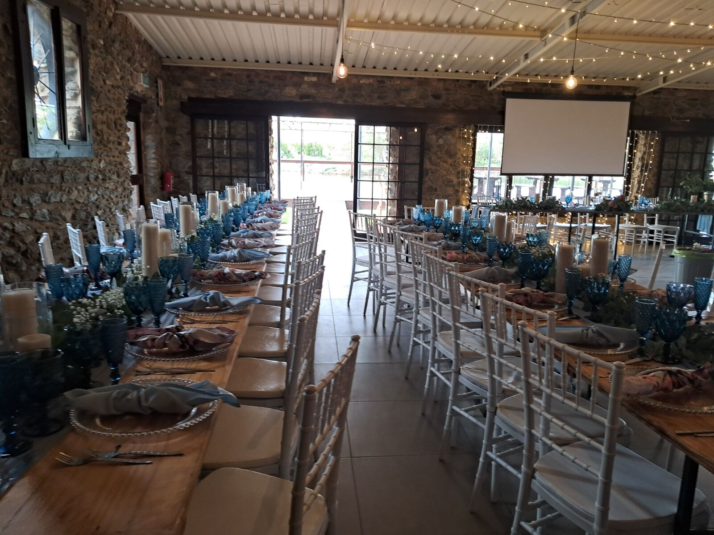

Gallery · Wellington & Western Cape
Wedding & event decor gallery
A curated look at wedding decor, party decor, matric ball decor, confirmations and catering by Creations, Wellington’s decor company, across the Cape Winelands. Choose a category to explore, and tap any image to view it in full. Looking for details? See our services.
No images in this category yet. Please check back soon.
Love What You See?
Let’s create yours in Wellington
Tell us about your celebration and we will come back to you within one working day with ideas, availability and a personalised quotation.